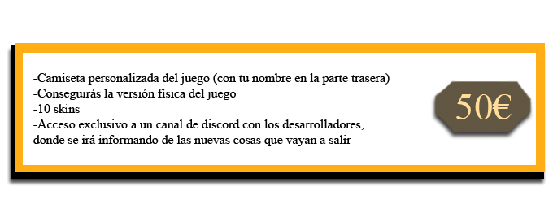
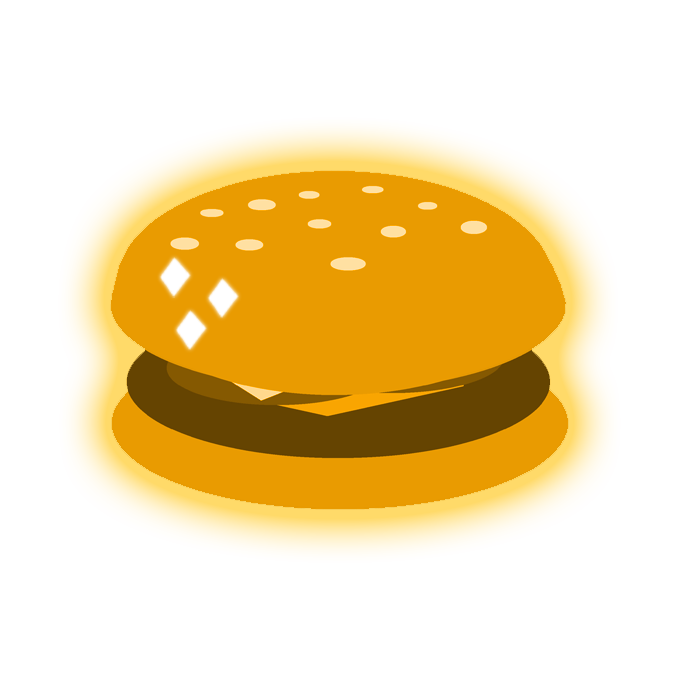

FOOD WARRIORS
¡Maravilloso juegazo de guerra de comida!
INTRODUCCIÓN
¿En qué consiste Food Warriors?
Food Warriors es un juego creado por la famosa compañía FiredRedGames. Se trata de una experiencia única donde podrás conseguir eso con lo que toda persona ha soñado alguna vez: lanzar comida a otras personas, incluso a tus propios amigos.
El juego consiste en vencer al equipo contrario cogiendo la comida que hay por el escenario y lanzándola. Pero, ¡cuidado! Si no consigues derrotar al enemigo antes de que se pare el reloj…todos perderéis.
Autoría
Juego desarrollado por la compañia FiredRedGames.
Grupo A.
Redes sociales
¡Siguenos en nuestras redes sociales para ver más sobre Food Warriors!
Subiremos información y actualizaciones sobre el estado del juego a diario. ¡Mantente informado siguiendonos en Instagram, YouTube y Discord!


CAMPAÑA
Vídeo promocional
En este corto vídeo promocional podrás descubrir cuál es la trama de Food Warriors.
Banda sonora
¡Disfruta de la banda sonora de Food Warriors!
Publicación exclusiva de 2 canciones originales del videojuego Food Warriors.
Food Warriors OST 01: "What's on the Main Menu?"
Food Warriors OST 02: "Menu Dubs-Burgers"
¡El juego comienza!
¡Descubre en qué consiste Food Warriors, su historia y el gameplay!
Food Warriors es un shooter competitivo en tercera persona de guerra de comida con estética cartoon, donde los jugadores podrán lanzarse comida entre sí y demostrar quién es el rey del patio.
Existen diferentes modos de juegos: individual y por equipos.
Tanto en una modalidad como en la otra los 3 primeros puestos del ranking obtendrán cosméticos especiales.
¡Consigue toda tu colección de prendas cosméticas para vacilar al resto de compañeros en el patio!
¡Recuerda que las prendas solamente son obtenibles en cada evento, con lo que son únicas y exclusivas! ¡No dejes pasar esta oportunidad, son de edición limitada!
La batalla de Food Warriors comenzó un buen día cuando los miembros de 2 grupos de la escuela entraron en una pela.
Para resolver el conflicto, decidieron hacer lo que toda persona haría en esta situación: Comenzar otro conflicto. Una guerra de comida.
El grupo ganador sería para siempre recordado como el mejor de los dos grupos. Y así, durante todo el curso, los alumnos de la escula se dedicaron a practicar el lanzamiento de tomate día si y día también...
¡Se acabaron los comedores escolares aburridos! ¡Comienza el juego!

En Food Warriors se controla a un personaje que puede interactuar con los objetos de comida del entorno.
El objetivo consiste en vencer al equipo contrario en una guerra de comida.
Cada vez que le des a un enemigo con la comida, obtendrás puntos y haras que tu equipo este un paso más cerca de la victoria.
Durante la partida, tendrás que lanzar la mayor cantidad de comida posible a tus enemigos para ganar la partida.
Para ganar hay que derrotar al equipo enemigo, abatiendo por completo a los estudiantes empapandolos de estos de comida hasta que se rindan.
¡Aprovecha las mesas como protección! Fabrica barricadas y cubrete para evitar ser manchado. Tus enemigos no pueden ganarte si no pueden mancharte. Haz uso del entorno y encuentra cualquier forma de atrincherarte.
¡A veces una buena defensa es la diferencia entre la victoria y la derrota!
La partida tiene un tiempo de duración equivalente al del patio del colegio. Cuando suene la sirena, termina la ronda. Si no ha ganado ninguno de los equipos, ambos pierden la ronda.
Contribuciones
¡Ayudanos al equipo de desarrollo de Food Warriors!
Las donaciones son nuestra principal fuenta de ingresos para el desarrollo de este juego.


Objetivos
El objetivo actual de FiredRedGames es alcanzar una meta de 250.000€ para poder impulsar el desarrollo de Food Warriors. ¡Con vuestra ayuda, este juego podrá seguir adelante y evolucionar hasta llegar a ser algo único!
Progreso actual: 120.170€


Equipo
Los integrantes del equipo de desarrollo de Food Warriors son:


FAQ
Preguntas frecuentes
P: ¿Será Food Warriors free to play?
R: No. Food Warriors es un juego de pago. Se publicará una demo gratis, pero el juego final será pay to play.
P: ¿Habrá micro transacciones en el juego?
R: Si. Queremos fomentar el gasto de economía virtual. Bitcoin.
P: ¿Se harán más skins cuando salga el juego?
R: Si. El equipo de desarrollo seguirá produciendo nuevo contenido para Food Warriors, incluyendo skins.
P: ¿Se introducirán nuevos personajes en el juego?
R: Los jugadores pueden customizar su aspecto por completo con skins y otros objetos cosméticos. Los personajes de la portada no son los únicos que existen en el juego.
P: ¿Habrá un sistema de niveles?
R: Si. Cuantas más partidas juegues y mejor puntuación obtengas, mayor nivel tendrás.
P: ¿Cada cuanto habrá updates?
R: Las actualizaciones se publicarán de manera mensual.
P: ¿Habrá eventos especiales de algún tipo?
R: Si. Habrá eventos por cada estación del año y festividad.
ATENCIÓN: Esta página simula la campaña de microfinanciación de un videojuego ficticio y no representa un producto real. Práctica de Multimedia, 1º GDDV - Curso 21/22 (Quintana), URJC. La URJC no se hace responsable del contenido expuesto por el autor.